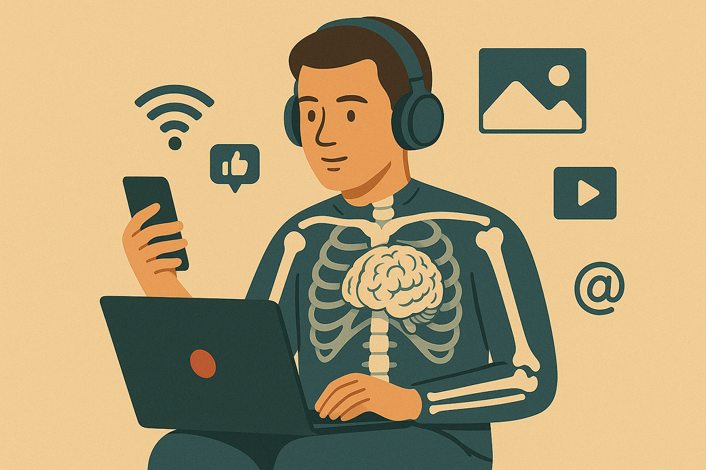
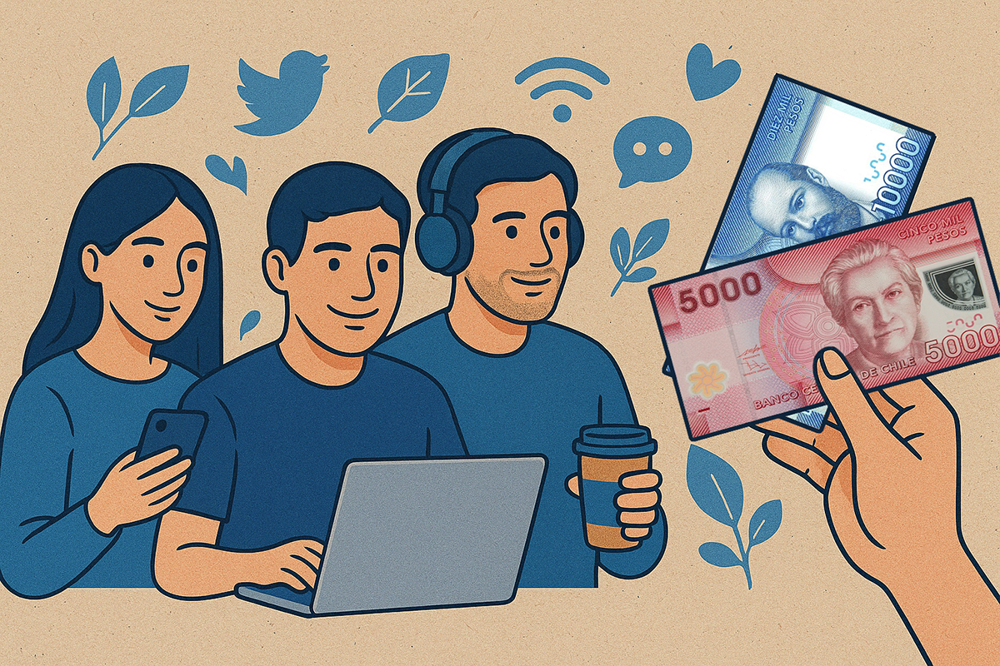
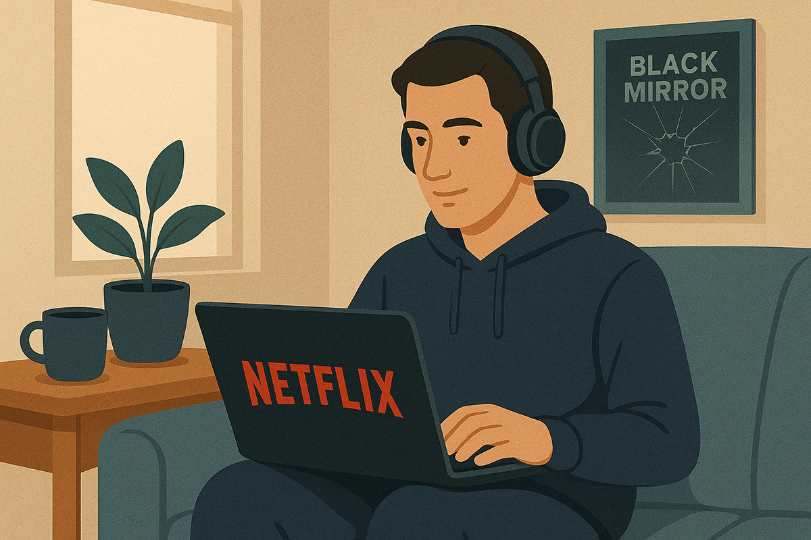

Generación Z en el trabajo
Una nueva era laboral. Spoiler, no es de 9 am a 6 pm.
Una nueva era laboral. Spoiler, no es de 9 am a 6 pm.

Hasta hace poco, imaginábamos a la Generación Z, es decir, los nacidos entre 1997 a 2012, como adolescentes colegiales. Con mucha suerte, conocíamos algunos que ya estaban en la universidad empezando sus carreras.
Resulta que el tiempo ha hecho lo suyo, y hoy los Gen Z ya están ingresando al mercado laboral como trabajadores estables. Con eso, se avecinan una serie de cambios, porque esta nueva generación viene a cambiar paradigmas.

Partamos con lo primero: quiénes son y cómo se definen. La Generación Z son la generación que viene después de los millennials. A diferencia mía y quizás de muchos que nos leen, ellos nacieron con internet, crecieron con redes sociales y herramientas tecnológicas. Nada de cassettes o CDs, grabar cosas en la televisión, o hablar por Messenger. Probablemente, ni saben lo qué es eso.
Son nativos digitales, y eso hace que estén mucho más expuestos a todo lo que está pasando en el mundo. ¿El resultado? Tienden a ser jóvenes, más actualizados, más empáticos y respetuosos de su entorno. Consumen información en medios digitales o redes sociales, e incluso lo ven como posibles fuentes de ingresos.
No todo es color de rosas, obviamente. Los expertos hablan de que son una generación más vulnerable, porque pueden ser expuestos en internet en cosa de segundos. También, les ha tocado una vida con todo al alcance de un clic, lo que hace que algunas personas los definan como “generación de cristal”, con baja tolerancia a la frustración cuando las cosas no son inmediatas.

¿Cómo son los Gen Z en el mundo laboral? Según el World Economic Forum, esta generación representa actualmente el 30% de la fuerza laboral, porcentaje bastante significativo y que, obviamente, seguirá aumentando.
Hay dos cosas que los estudios recalcan como importantes al minuto de emplear a esta generación y que se valoran a la par del salario: la personalización de la experiencia y la salud mental.
Lo primero tiene mucho que ver con la experiencia del empleado. Los Gen Z priorizan el trabajo remoto y flexible, y los beneficios como más vacaciones o plataformas de ejercicio. En salud mental, son la generación que tuvo el declive más marcado durante la pandemia: un 46% dijo que su salud mental había empeorado. En esa línea, los Gen Z se preocupan mucho de los límites entre el trabajo y la vida personal.

Todo esto tiene una consecuencia obvia: muchos de la Generación Z buscan ser su propio jefe. Y qué buena idea tuvieron, porque justamente con la digitalización se han abierto muchas opciones de trabajo que no tienen nada que ver con ir a una oficina.
Se trata de las oportunidades que ha traído el mundo digital y específicamente la inteligencia artificial. Un panorama que se ve más o menos así:
Estas oportunidades no son secretas, de hecho, existe un mundo de contenido en TikTok sobre el tema. Y tú, ¿has trabajado con un Gen Z? ¿Te animas a mirar el mundo laboral desde su perspectiva?
 Actualidad
ActualidadEl recordado programa noventero “Venga Conmigo” marcó a toda una generación en Chile. Su exitoso segmento “Corazones Service” se transformó…
 Actualidad
ActualidadHace aproximadamente 2 meses comenzamos con el cierre de lo que empezó en julio como el “Compariniverse”.
 Actualidad
ActualidadHace unos meses lanzamos Compariniverse: la primera campaña en Chile protagonizada por una celebridad completamente clonada con IA.